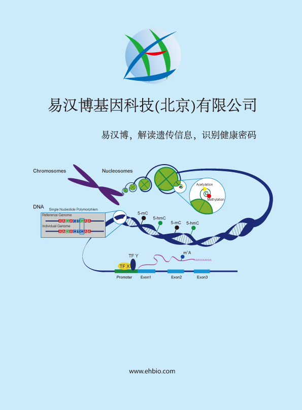

EHBIO Gene Technology
1
Linux基础内容
1.1
Linux系统简介和目录理解
1.1.1
为什么要用Linux系统
1.1.2
Linux系统简介
1.1.3
如何获取Linux系统
1.1.4
Linux系统登录
1.1.5
初识Linux系统
1.1.6
我的电脑在哪？
1.1.7
硬件信息查看
1.1.8
目录内容查看
1.1.9
新建目录
1.1.10
访问文件
1.1.11
获取可用命令行参数
1.1.12
小结
1.1.13
练习题
1.2
Linux下文件操作
1.2.1
文件上下翻转和左右翻转
1.2.2
其它新建文件的方式
1.2.3
文件拷贝、移动、重命名
1.2.4
Linux下命令的一些异常情况
1.2.5
Linux下文件内容操作
1.2.6
小结和练习
1.3
Linux终端常用快捷操作
1.4
Linux下的标准输入、输出、重定向、管道
1.5
Linux文件内容操作
1.5.1
文件生成
1.5.2
文件排序
1.5.3
FASTA序列提取
1.6
Linux下的查找命令
1.6.1
命令/可执行程序查找
1.6.2
普通文件快速定位 locate
1.6.3
普通文件多条件查找 find
1.6.4
按文件内容查找 grep
1.7
一句话加速grep近30倍
1.7.1
获取单基因表达量
1.7.2
那如果获取多个基因怎么操作呢？
1.8
命令运行监测
1.9
References
2
Linux下软件安装相关
2.1
文件属性和可执行属性
2.1.1
文件属性
2.1.2
可执行属性
2.2
PATH和path，傻傻分不清
2.2.1
其它被忽略的事情
2.3
软件安装的几种传统方式
2.3.1
系统包管理器安装
2.3.2
下载二进制文件
2.3.3
源码编译安装
2.3.4
Python包的安装
2.3.5
Anaconda的两个福利
2.3.6
R和R包的安装
2.3.7
Perl包的安装
2.4
Conda安装配置生物信息软件
2.4.1
Conda安装和配置
2.4.2
Conda基本使用
2.4.3
Conda的channel
2.4.4
创建不同的软件运行环境
2.4.5
移除某个conda环境
2.4.6
Conda配置R
2.4.7
Conda环境简化运行
2.4.8
Conda环境备份
2.4.9
Conda环境导出和导入
2.4.10
Conda软件安装 core dump error/Segment fault/段错误 怎么办
2.4.11
Conda为什么越来越慢？
2.4.12
Conda是如何工作的
2.4.13
Conda哪一步慢？
2.4.14
如何提速Conda
2.4.15
下载提速
2.4.16
使用conda-pack直接从已经安装好的地方拷贝一份 (同一操作系统)
2.5
Docker安装
2.5.1
Docker能做什么
2.5.2
Docker的几个基本概念
2.5.3
安装和配置
2.5.4
Docker用户权限
2.5.5
Docker试用
2.5.6
Docker系统基本操作
2.5.7
使用Dockerfile自动构建镜像
2.5.8
Docker的特征
2.5.9
Docker使用注意
2.6
Makefile知识
2.6.1
参考
2.7
References
3
Linux神器
3.1
正则表达式
3.2
awk命令
3.2.1
awk基本参数解释
3.2.2
常见操作
3.2.3
糅合操作
3.3
SED命令
3.3.1
sed基本参数解释
3.3.2
常见操作
3.4
VIM的使用
3.4.1
初识VIM
3.4.2
VIM中使用正则表达式
3.5
有了这些，文件批量重命名还需要求助其它工具吗？
3.5.1
简单重命名
3.5.2
复杂重命名
3.6
耗时很长的程序忘加nohup就运行了怎么办？
3.7
References
4
Bash 字符串处理
4.1
Bash特殊字符
4.2
Bash变量
4.3
Bash操作符
4.4
Shell中条件和test命令
4.5
Shell流控制
4.6
Shell函数
4.7
输入输出
4.8
命令行处理 命令行处理命令:
4.9
进程和作业控制
5
Bioinfo tools
5.1
寻找Cas9的同源基因并进行进化分析
5.2
如何获取目标基因的转录因子（上）——biomart下载基因和motif位置信息
5.2.1
1. 文件准备
5.2.2
2. 什么是bed文件？
5.2.3
3. BioMart数据下载
5.3
如何获取目标基因的转录因子（下）——Linux命令获取目标基因TF
5.3.1
1. 基础回顾
5.3.2
2. 文件格式处理
5.3.3
3. 计算基因的启动子区
5.3.4
4. 取两文件的交集
5.3.5
5. 提取我们关注的基因
5.3.6
重点总结
5.4
emboss的使用
5.5
使用samtools计算SNP
5.6
Bedtools使用
5.7
SRA toolkit使用
5.8
生信流程开发
5.9
数据同步和备份
5.9.1
scp
5.9.2
rsync
5.9.3
rdiff-backup
5.10
References
6
Bioinfo questions
7
Supplemental
8
生信教程文章集锦
8.1
生信宝典
8.1.1
系列教程
8.1.2
NGS分析工具评估
8.1.3
宏基因组教程
8.1.4
系列宣传
8.1.5
生信生物知识
8.1.6
文献精读
8.1.7
Linux
8.1.8
CIRCOS系列
8.1.9
R统计和作图
8.1.10
扩增子三步曲
8.1.11
宏基因组分析专题
8.1.12
NGS基础
8.1.13
癌症数据库
8.1.14
Python
8.1.15
NGS软件
8.1.16
Cytoscape网络图
8.1.17
分子对接
8.1.18
生信宝典之傻瓜式
8.1.19
生信人写程序
8.1.20
小技巧系列
8.1.21
招聘
8.2
宏基因组
8.2.1
精选文章推荐
8.2.2
培训、会议、征稿、招聘
8.2.3
科研经验
8.2.4
软件和数据库使用
8.2.5
扩增子学习三步曲
8.2.6
宏基因组分析专题
8.2.7
R统计绘图
8.2.8
实验设计与技术
8.2.9
基础知识
8.2.10
必读综述
8.2.11
高分文章套路解读
8.2.12
科普视频-寓教于乐
8.2.13
友军文章汇总推荐
ct@ehbio.com
Linux学习
Linux学习
易生信
www.ehbio.com/Training
train@ehbio.com
2020-08-16
EHBIO Gene Technology
